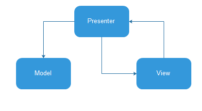

MVP模式是MVC模式在Android上的一种变体，要介绍MVP就得先介绍MVC。 在MVC模式中，Activity应该是属于View这一层。而实质上，它既承担了View，同时也包含一些Controller的东西在里面。 这对于开发与维护来说不太友好，耦合度大高了。把Activity的View和Controller抽离出来就变成了View和Presenter，这就是MVP模式
因此MVP模式（Model-View-Presenter）可以说是MVC模式（Model-View-Controller）在Android开发上的一种变种、进化模式。
MVC模式
MVC模式的结构分为三部分，实体层的Model，视图层的View，以及控制层的Controller
其中View层其实就是程序的UI界面，用于向用户展示数据以及接收用户的输入
而Model层就是JavaBean实体类，用于保存实例数据
Controller控制器用于更新UI界面和数据实例
MVP模式
按照MVC的分层，Activity和Fragment（后面只说Activity）应该属于View层，用于展示UI界面，以及接收用户的输入，此外还要承担一些生命周期的工作。Activity是在Android开发中充当非常重要的角色，特别是TA的生命周期的功能，所以开发的时候我们经常把一些业务逻辑直接写在Activity里面，这非常直观方便，代价就是Activity会越来越臃肿，超过1000行代码是常有的事，而且如果是一些可以通用的业务逻辑（比如用户登录），写在具体的Activity里就意味着这个逻辑不能复用了。如果有进行代码重构经验的人，看到1000+行的类肯定会有所顾虑。因此，Activity不仅承担了View的角色，还承担了一部分的Controller角色，这样一来V和C就耦合在一起了，虽然这样写方便，但是如果业务调整的话，要维护起来就难了，而且在一个臃肿的Activity类查找业务逻辑的代码也会非常蛋疼，所以看起来有必要在Activity中，把View和Controller抽离开来，而这就是MVP模式的工作了。

项目结构
View接口，定义在Activity里面用到的方法，Activity来实现这些接口
MainView.java
ShowLoadingView.java
public interface MainView extends ShowLoadingView{
void updateView(String phone);
void clearView();
void showToast(String msg);
}
Presenter主要负责数据处理和调用view里面的方法
//Presenter接口
public interface MainPresenter {
public void searchPhoneInfo(String phone);
}
//Presenter接口实现类
public class MainPresenterImpl implements MainPresenter{
private MainView mainView;
private MainPresenterImpl(){
}
//通过构造方法来把View传递过来
public MainPresenterImpl(MainView mainView) {
this.mainView = mainView;
}
@Override
public void searchPhoneInfo(String phone){
//获取数据，把数据传递到view或者调用view里的方法
mainView.showToast(error);
}
}
APP Activity
public class MainActivity extends Activity implements MainView{
private MainPresenter mainPresenter;
protected void onCreate(Bundle savedInstanceState) {
super.onCreate(savedInstanceState);
setContentView(R.layout.activity_main);
//接口实现的绑定，实际上还是间接的对Activity放入操作
mainPresenter = new MainPresenterImpl(this);
}
//实现MainView接口里面的方法，供在Presenter里面调用
}
MVP的优点
-
分离了视图逻辑和业务逻辑，降低了耦合
-
Activity只处理生命周期的任务，代码变得更加简洁
-
视图逻辑和业务逻辑分别抽象到了View和Presenter的接口中去，提高代码的可阅读性
-
Presenter被抽象成接口，可以有多种具体的实现，所以方便进行单元测试
-
把业务逻辑抽到Presenter中去，避免后台线程引用着Activity导致Activity的资源无法被系统回收从而引起内存泄露和OOM